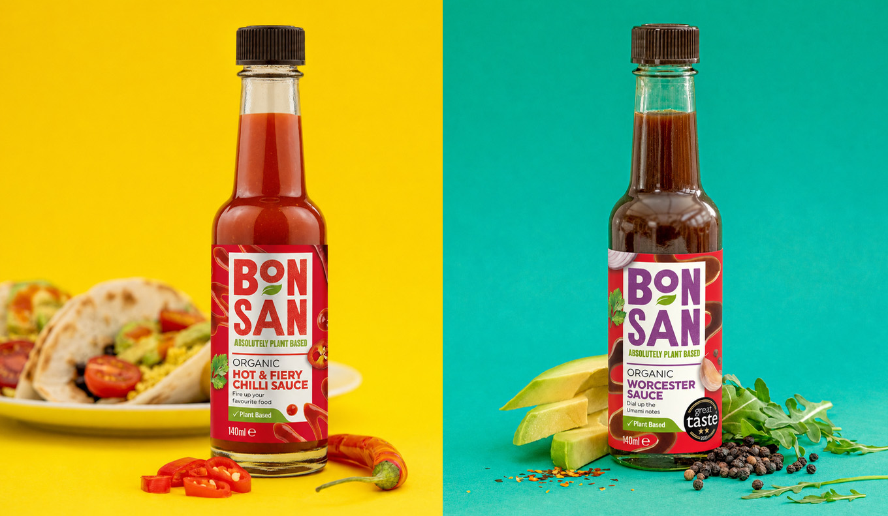
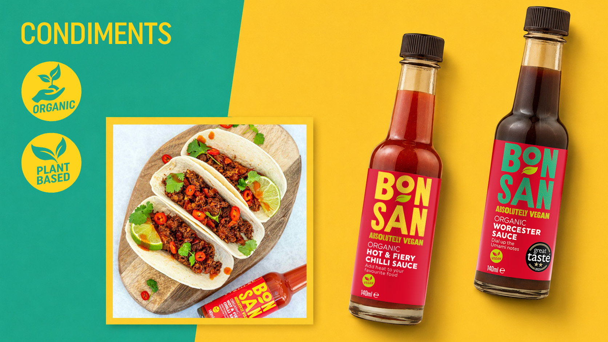
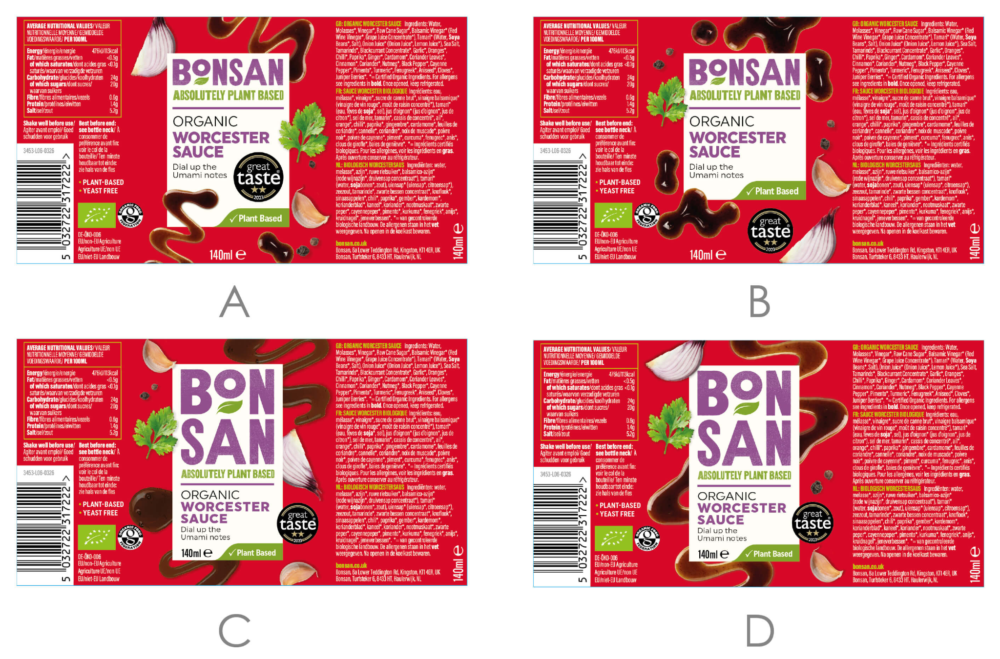
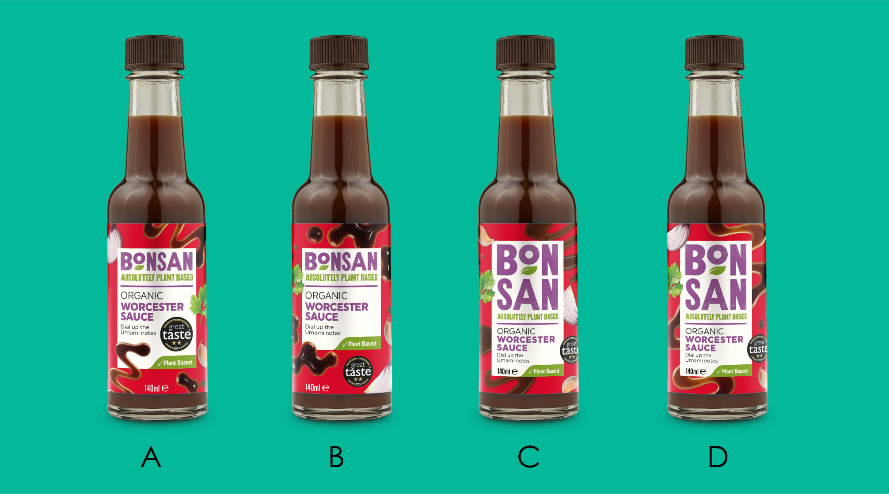
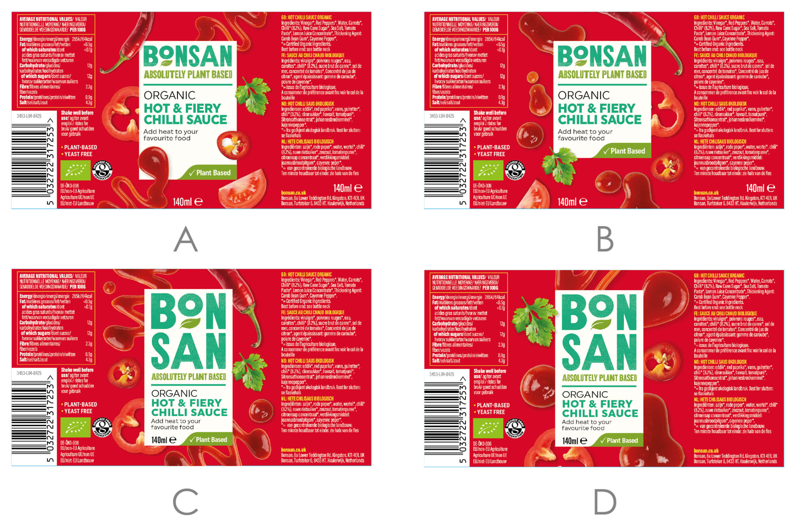
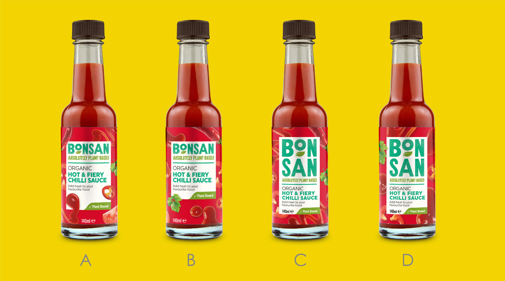
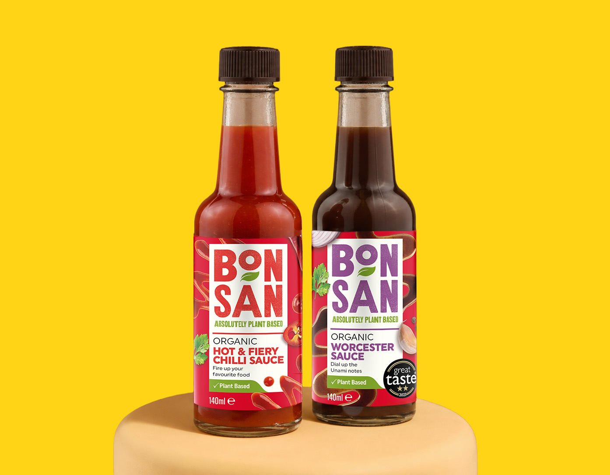

CASE STUDY / FMCG PACKAGING
Bonsan
Packaging
Refresh.
Bringing more flavour, movement and personality to the sauce range
While working at Windmill Organics, I was asked to refresh the packaging for Bonsan’s Worcester and Hot & Fiery Chilli Sauces. The aim was to make the range feel more lively and tasty, using ingredient-led imagery and sauce-inspired graphics to create stronger flavour cues, highlight key USPs and give each product a clearer identity.

01 / BEFORE THE REFRESH
Previous design.
The existing packaging felt quite flat and didn’t communicate each sauce clearly enough. The refresh focused on adding more movement, stronger flavour cues and a more distinctive visual identity, helping the chilli sauce feel less like ketchup and the Worcester sauce less like soy sauce.

02 / FLAVOUR HIERARCHY
Worcester sauce.
Exploring different balances of sauce graphics, ingredient imagery and logo scale to create a richer, more flavour-led design. Decided to change main titles to purple based on our competitors’ research.


03 / COLOUR & MOVEMENT
Chilli sauce.
Using bold chilli and tomato imagery, flowing sauce elements and a vibrant red palette to communicate heat and intensity. Explored a new fresh cyan title colour, however we ended up going for red.


04 / FINAL DIRECTION
Final design.
The completed labels create clearer flavour distinction and stronger ingredient-led cues across both sauces, while keeping the Bonsan identity consistent.
